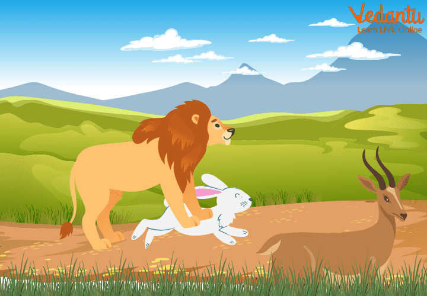
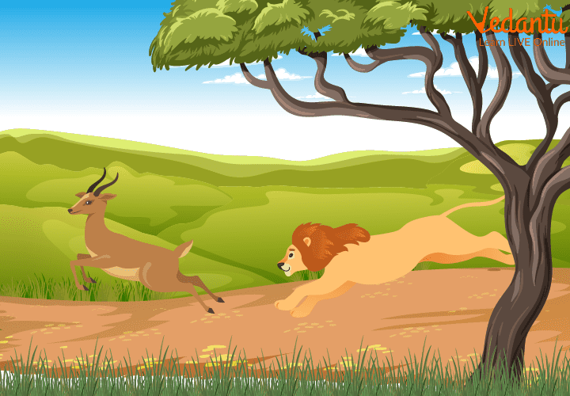
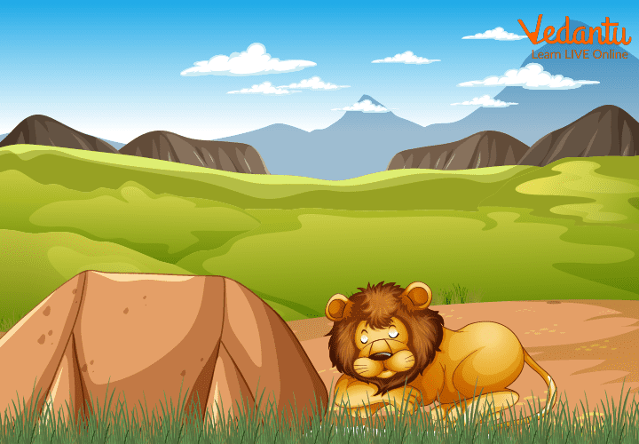

We have The Lion Story for you. Have you seen Lions? Have you visited a jungle safari? Let us read this story. After reading The Greedy Lion story, you will learn that being greedy is not good.
Being greedy is not good. We should always be happy with what we have in life. Sometimes we let go of so many good things in our life because of our greed of having even better things.
So, let us start with The Greedy Lion story….!
Once upon a time, there was a big and strong lion in a thick forest. It was summer, and the lion came out of his den on a hot afternoon. He was starving for food, and his stomach rumbled with hunger.
Once upon a time, there was a big and strong lion in a thick forest. It was summer, and the lion came out of his den on a hot afternoon. He was starving for food, and his stomach rumbled with hunger.
The king of the jungle had eaten nothing for the last two days. The lion’s mouth was dry with thirst. He started walking and went to the nearby river and drank some water. After drinking the water, he felt better. He then started searching for a portion of food, and after some time, he found a hare eating grass.

The lion was extremely happy that he had found the food to fulfil his hunger. He started thinking that the hare looked very delicious. Then the lion came silently behind the hare to hunt it down.
After a while, the lion landed on the back of the hare. But the lion was disappointed after seeing the size of the hare. The lion thought this hare was too small to fill my stomach. After feeling extremely disappointed, he decided to kill the hare, and then suddenly he noticed a deer at some distance.
His greedy eyes widely opened, and his mouth started salivating. The lion had thought that despite eating the small and slim hare, he could eat that large deer that would relieve him of hunting for the next few days as he could save the meat of the deer.
Immediately, he let that hare go; the hare was extremely relieved and thanked God for this great escape. The lion then started to run to catch the big and looking delicious deer. After sensing the lion's presence, the deer began fleeing in seconds.
She( the deer) ran extremely fast through the jungle and vanished into the deep jungle. The lion was breathing hard and finally stopped in a huge cloud of dust. Now he had nothing to eat as the hare had also run away, and he could not find any animal in the vicinity. He became disappointed and cried out.
The Lion Returned to His Den After Getting Nothing to Eat Now the sun was setting, and the lion retired to his den to take his much-needed rest. The king of the animals had to remain hungry for the whole day due to his greediness. The lion felt sorry for himself. Moral of The Story The moral of the story is never be greedy, be satisfied in life. Summary Did you like this story of The Greedy Lion? So, this was the greedy lion who left the hare to catch the deer and had nothing with him in the end. From this story, we learned that we should be satisfied with what we have and should not be greedy. Otherwise, we will lose what we have. You should also try not to be greedy in different situations. Explore the pages and enjoy! Also, if you love this story, we are sure you will also enjoy reading more of such bedtime stories on our website.